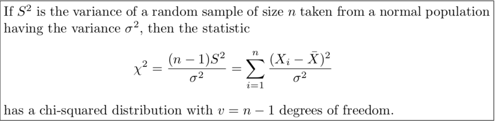

$S^2$ is the Sample Variance
(not the same as $\sigma^2_{\bar{X}}$, which is the variance for the sample mean distribution)
$$S^2 = \frac{1}{n-1}\sum_{i=1}^n(X_i - \bar{X})^2$$
- Previously we were talking about the probability distribution for $\bar{X}$.
- Now we will focus our attention on the probability distribution for $S^2$.
The sampling distribution for $S^2$ is used for studying variability.
Some Important Results
An important result is introduced in this section:

Which depends on some important results from chapter 7, which we skipped...
I will just tell you the results! (proofs are easy if you read up on MGFs)
- If $Y_i \sim \chi^2(\nu_i)$ for $i = 1,\dots , n$ are independent chi-square variables, then $V = \sum_{i=1}^n Y_i \sim \chi^2 \left(\sum_{i=1}^n \nu_i \right)$.
- If $Z \sim N(0,1)$, then $Z^2 \sim \chi^2(1)$.
Notes to Remember!
- The population being sampled from in this case must be normal.
- If the random sample has size $n$, then we have $\chi^2$-distribution with $n-1$ degrees of freedom.
- When using tables, due to customary reasons, the area $\alpha$ is to the right of the value $\chi^2_{\alpha}$ (note with software and calculators this may not be the case).
Example 1
A manufacturer of car batteries guarantees that the batteries will last, on average, 3 years with a standard deviation of 1 year. If five of these batteries have lifetimes of 1.9, 2.4, 3.0, 3.5, and 4.2 years, should the manufacturer still be convinced that the batteries have a standard deviation of 1 year? Assume that the battery lifetime follows a normal distribution.
Example 2
Suppose the weights of bags of flour are normally distributed with a population standard deviation of $\sigma = 1.2$ ounces.
Find the probability that a sample of 200 bags would have a standard deviation between 1.1 and 1.3 ounces.